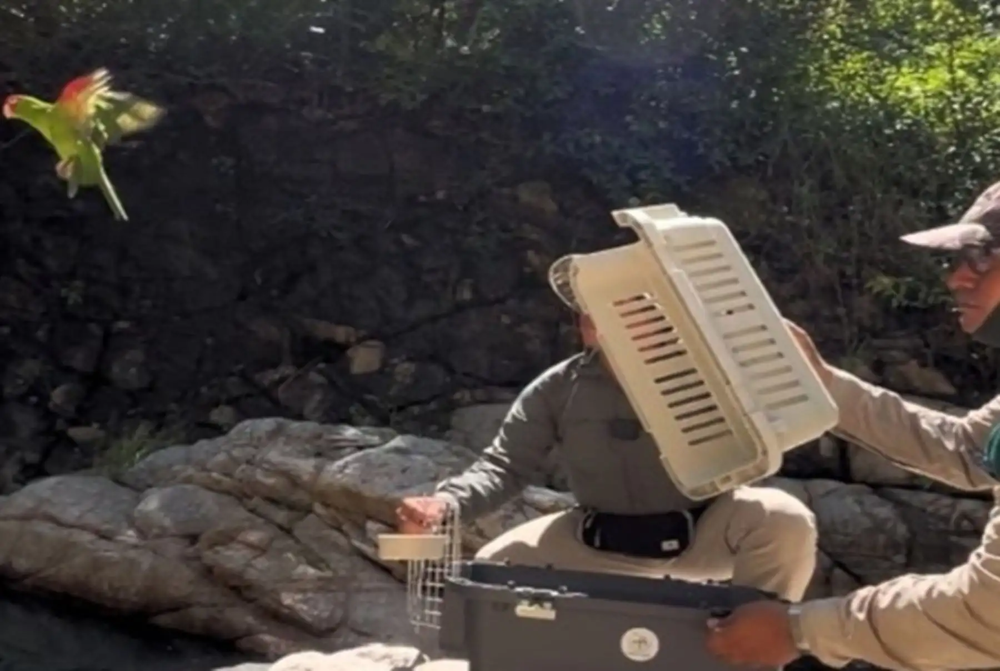

En el marco de sus competencias orientadas a la protección y gestión sostenible de los recursos de flora y fauna silvestre, el Servicio Nacional Forestal y de Fauna Silvestre (Serfor), organismo técnico especializado adscrito al Ministerio de Desarrollo Agrario y Riego (Midagri), ejecutó de manera exitosa la liberación de una boa mantona y un loro. Estos ejemplares habían sido previamente rescatados gracias a intervenciones técnicas y al reporte oportuno, culminando así un proceso fundamental para su retorno a la naturaleza.
La acción de liberación se llevó a cabo en un área que cumple con las condiciones ecológicas idóneas para garantizar la supervivencia y el desarrollo natural de ambas especies. Los especialistas del Serfor evaluaron previamente el estado sanitario, físico y comportamental de los especímenes, determinando que se encontraban aptos para desenvolverse por sí mismos en su hábitat natural, tras haber superado las etapas de recuperación y manejo técnico posterior al rescate.
El Serfor enfatizó que este tipo de acciones reafirman el compromiso institucional con la preservación de la biodiversidad en la región Piura y el cumplimiento de la legislación forestal y de fauna silvestre vigente.
Más allá de la recuperación y retorno de los especímenes a sus ecosistemas, las autoridades del sector agrario y de conservación recalcaron la necesidad imperativa de promover una coexistencia responsable entre las comunidades humanas y la fauna silvestre. En muchas ocasiones, la aparición de animales silvestres en zonas urbanas o periurbanas responde a la fragmentación de sus hábitats naturales, la expansión de las actividades antrópicas y, en otros casos, a la tenencia ilegal de animales como mascotas.
Desde el Ministerio de Desarrollo Agrario y Riego (Midagri), a través del Serfor, se recuerda a la ciudadanía que la fauna silvestre cumple funciones ecológicas irremplazables en los bosques y ecosistemas peruanos, tales como la dispersión de semillas, el control biológico de poblaciones y la polinización. Por ello, extraer a los animales de su medio natural o mantenerlos en cautiverio altera gravemente el equilibrio de los ecosistemas y constituye una infracción a las normativas nacionales.
Las autoridades locales y los especialistas forestales instan permanentemente a la población a reportar cualquier situación que ponga en riesgo la vida de la fauna silvestre o que involucre su tenencia ilegal, comercialización o presencia inesperada en áreas pobladas. La participación ciudadana, a través de alertas tempranas, resulta crucial para que los equipos técnicos del Serfor puedan intervenir con prontitud, rescatar a los ejemplares y brindarles la atención especializada que requieren.
Con esta reciente liberación en Piura, el Serfor continúa consolidando su labor operativa a nivel nacional, articulando esfuerzos con diversas entidades y con la propia sociedad civil para asegurar que el patrimonio de fauna silvestre del Perú sea valorado, protegido y respetado en beneficio de las actuales y futuras generaciones.